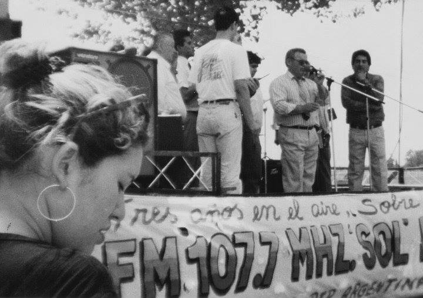

Nuestra Historia
Sol de Justicia nació con el propósito de llevar un mensaje de esperanza y fe a través de diversas iniciativas. A lo largo de los años, hemos crecido y nos hemos consolidado como una comunidad unida por valores y principios sólidos. Nuestra historia está llena de momentos inspiradores y logros que reflejan nuestro compromiso con la misión.
Desde nuestros inicios, hemos trabajado para impactar vidas de manera positiva, brindando apoyo y recursos a quienes más lo necesitan. Nuestro compromiso sigue siendo el mismo: servir con amor y dedicación.
